6 Miary relacji przestrzennych
Odtworzenie obliczeń z tego rozdziału wymaga załączenia poniższych pakietów oraz wczytania poniższych danych:
library(sf)
library(stars)
library(gstat)
library(pgirmess)
library(ggplot2)
library(geostatbook)
data(punkty)
data(siatka)
data(granica)6.1 Geostatystyka
6.1.1 Definicja
Geostatystyka jest to zbiór narzędzi statystycznych uwzględniających w analizie danych ich przestrzenną i czasową lokalizację, a opartych o teorię funkcji losowych.
6.1.2 Funkcje geostatystyki
Istnieją cztery główne funkcje geostatystyki:
- Identyfikacja i modelowanie struktury przestrzennej/czasowej zjawiska.
- Estymacja - szacowanie wartości badanej zmiennej w nieopróbowanym miejscu i/lub momencie czasu.
- Symulacja - generowanie alternatywnych obrazów, które honorują wyniki pomiarów i strukturę przestrzenną/czasową zjawiska.
- Optymalizacja próbkowania/sieci pomiarowej.
Inaczej mówiąc, celem geostatystyki nie musi być tylko interpolacja (estymacja) przestrzenna, ale również zrozumienie zmienności przestrzennej lub czasowej zjawiska, symulowanie wartości, oraz optymalizacja sieci pomiarowej.
6.1.3 Podstawowe etapy
W przypadku estymacji geostatystycznej, zwanej inaczej interpolacją geostatystyczną, pełna ścieżka postępowania składa się z siedmiu elementów:
- Zaprojektowanie sposobu (typu) próbkowania oraz organizacji zadań.
- Zebranie danych, analiza laboratoryjna.
- Wstępna eksploracja danych, ocena ich jakości.
- Modelowanie semiwariogramów na podstawie dostępnych danych.
- Estymacja badanej cechy.
- Porównanie i ocena modeli.
- Stworzenie wynikowego produktu i jego dystrybucja.
6.1.4 Dane wejściowe
Jedną z najważniejszych ograniczeń stosowania metod geostatystycznych jest spełnienie odpowiednich założeń dotyczących danych wejściowych. Muszą one:
- Zawierać wystarczająco dużą liczbę punktów (minimalnie >30, ale zazwyczaj więcej niż 100/150).
- Być reprezentatywne.
- Być niezależne.
- Być stworzone używając stałej metodyki.
- Być wystarczająco dokładne.
6.1.5 Badane zjawisko
Oprócz ograniczeń dotyczących danych wejściowych, istnieją również dwa założenia dotyczące analizowanej cechy (analizowanego zjawiska):
- Przestrzennej ciągłości - przestrzenna korelacja między zmienny w dwóch lokalizacjach zależy tylko od ich odległości (oraz czasem kierunku), lecz nie od tego gdzie są one położone.
- Stacjonarności - średnia i wariancja są stałe na całym badanym obszarze.
6.1.6 Podstawowe symbole
Podstawowe symbole w określaniu przestrzennej zmienności (rycina 6.1) to:
- \(u_{\alpha}\) - wektor współrzędnych.
- \(z(u_{\alpha})\) - badana zmienna jako funkcja położenia - inaczej określany jako ogon (ang. tail).
- \(h\) - lag - odstęp pomiędzy dwoma lokalizacjami.
- \(z(u_{\alpha}+h)\) - wartość badanej zmiennej odległej o odstęp \(h\) - inaczej określany jako głowa (ang. head).
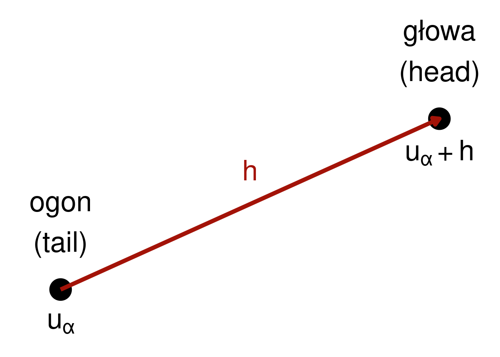
Rycina 6.1: Wizualizacja relacji pomiędzy wartością ogona a głowy odległymi od siebie o wektor h.
6.2 Przestrzenna kowariancja i korelacja
6.2.1 Miary podobieństwa
Przestrzenna kowariancja, korelacja i semiwariancja to miary określające przestrzenną zmienność analizowanej cechy.
- Kowariancja i korelacja to miary podobieństwa pomiędzy dwoma zmiennymi.
- Przenosząc to na aspekt przestrzenny, badamy jedną zmienną, ale pomiędzy dwoma punktami odległymi od siebie o pewien dystans (określany jako lag).
- W efekcie otrzymujemy miarę podobieństwa pomiędzy wartością głowy i ogona (rycina 6.2).
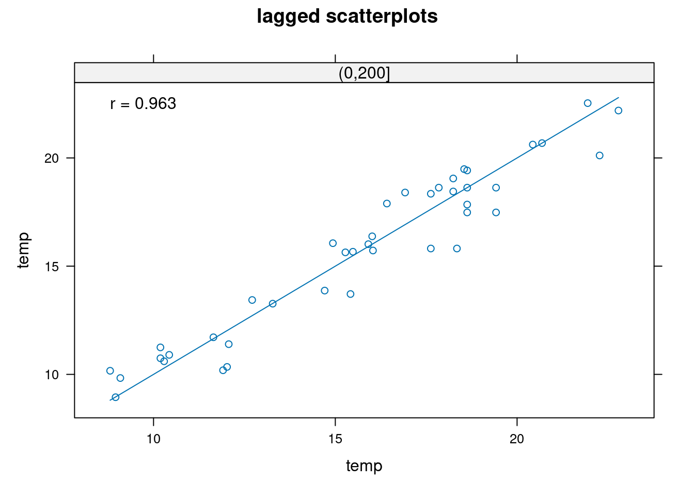
Rycina 6.2: Relacja między wartościami zmiennej temp w danym miejscu a wartościami zmiennej temp w odległości do 200 metrów.
6.2.2 Wykres rozrzutu z przesunięciem
Wykres rozrzutu z przesunięciem pokazuje korelację pomiędzy wartościami analizowanej cechy w pewnych grupach odległości.
Taki wykres można stworzyć używając funkcji hscat() z pakietu gstat (rycina 6.3).
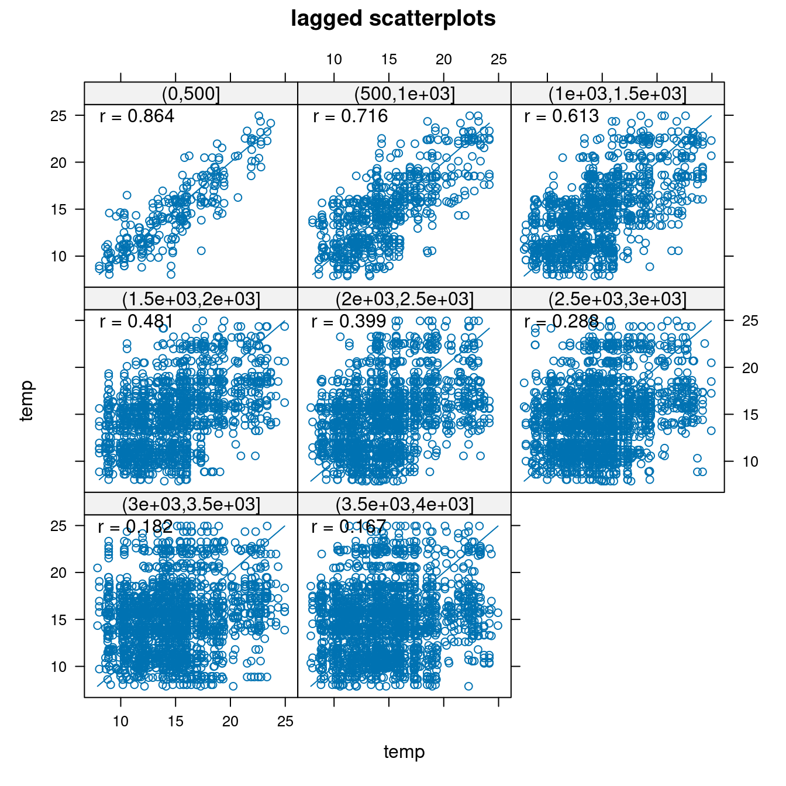
Rycina 6.3: Wykres rozrzutu z przesunięciem dla zamiennej temp.
Przykładowo, na powyższym wykresie widać wartość cechy temp z kolejnymi przesunięciami - od 0 do 500 metrów, od 500 metrów do 1000 metrów, itd.
W pierwszym przedziale wartość cechy temp z przesunięciem wykazuje korelację na poziomie 0,876, a następnie z każdym kolejnym przedziałem (odległością) ta wartość maleje.
W przedziale 3500 do 4000 metrów osiąga jedynie 0,128.
Pozwala to na stwierdzenie, że cecha temp wykazuje zmienność przestrzenną - podobieństwo jej wartości zmniejsza się wraz z odległością.
6.2.3 Autokowariancja
Podobną informację jak wykres rozrzutu z przesunięciem daje autokowariancja (rycina 6.4).
Pokazuje ona jak mocno przestrzennie powiązane są wartości par obserwacji odległych od siebie o kolejne przedziały.
Jej wyliczenie jest możliwe z użyciem funkcji variogram() z pakietu gstat, gdzie definiuje się analizowaną zmienną, zbiór punktowy, oraz ustala się argument covariogram na TRUE.
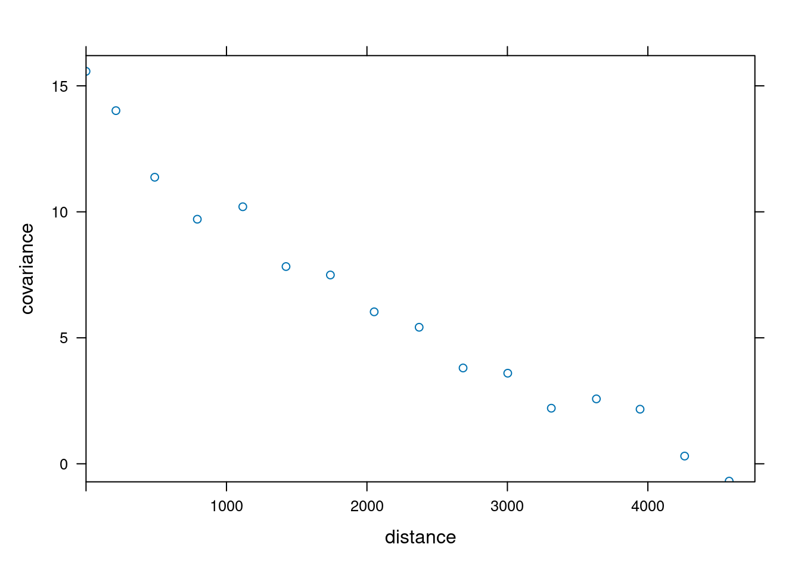
Rycina 6.4: Autokowariancja zmiennej temp.
6.2.4 Autokorelacja
Kolejną miarą przestrzennego podobieństwa jest autokorelacja (rycina 6.5).
Jej wykres (autokorelogram) pokazuje wartość jednej z miar autokorelacji (np. I Morana lub C Geary’ego) w stosunku do odległości.
Na poniższym przykładzie, wartość statystyki I Morana jest wyliczana poprzez funkcję correlog() z pakietu pgirmess.
wsp = st_coordinates(punkty)
kor = correlog(wsp, punkty$temp, method = "Moran")
plot(kor)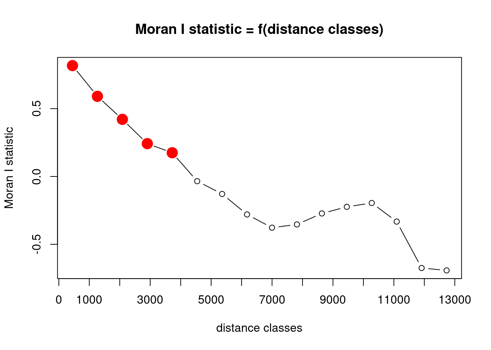
Rycina 6.5: Autokorelacja zmiennej temp.
6.3 Semiwariancja
6.3.1 Miara niepodobieństwa
Trzecią miarę charakteryzującą relację między obserwacjami odległymi o kolejne odstępy jest semiwariancja. Z praktycznego punktu widzenia, semiwariogram jest preferowaną miarą relacji przestrzennej, ponieważ wykazuje tendencję do lepszego wygładzania danych niż funkcja kowariancji. Dodatkowo, semiwariogram jest mniej wymagający obliczeniowo. Jednocześnie warto zdawać sobie sprawę, że kowarancja i korelacja przestrzenna nadaje się nie gorzej niż semiwariancja dla potrzeb interpretacji relacji przestrzennych.
6.3.2 Wzór
Zmienność przestrzenna analizowanej cechy może być określona za pomocą semiwariancji. Jest to połowa średniej kwadratu różnicy pomiędzy wartościami badanej zmiennej (\(z\)) w dwóch lokalizacjach odległych o wektor \(h\):
\[\gamma(h) = \frac{1}{2}(z(u_{\alpha}) - z(u_{\alpha} + h))^2\]
Przykładowo, aby wyliczyć wartość semiwariancji (gamma) pomiędzy dwoma punktami musimy znać wartość pierwszego z nich (w przykładzie jest to ok. 13,85 stopni Celsjusza) oraz drugiego z nich (ok. 15,48 stopni Celsjusza).
Korzystając z wzoru na semiwariację otrzymujemy wartość równą ok. 1,33.
Znamy również odległość między punktami (ok. 3240,89 metra), więc możemy w uproszczeniu stwierdzić, że dla tej pary punktów odległych o 3240 metrów wartość semiwariancji wynosi około 1,33.
odl = st_distance(punkty[c(1, 2), ])[2]
gamma = 0.5 * (punkty$temp[1] - punkty$temp[2]) ^ 2
gamma## [1] 1.3316916.3.3 Chmura semiwariogramu
Jeżeli w badanej próbie mamy \(n\) obserwacji oznacza to, że możemy zaobserwować \(\frac{1}{2}n(n-1)\) par obserwacji.
Każda z tych par obserwacji daje nam informację o semiwariancji występującej wraz z odległością.
Tę semiwariancję można zaprezentować na wykresie zwanym chmurą semiwariogramu (rycina 6.6).
Do jej wyliczenia służy funkcja variogram() z argumentem cloud = TRUE.
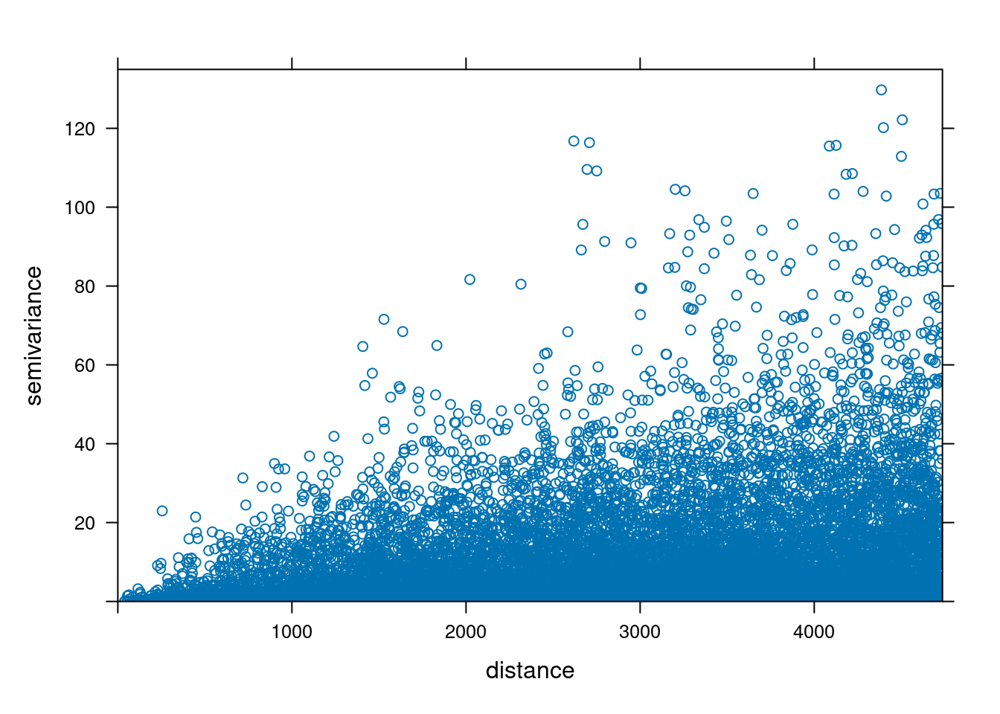
Rycina 6.6: Chmura semiwariogramu zmiennej temp.
Chmura semiwariogramu pozwala także na zauważenie par punktów, których wartości znacząco odstają.
Aby zlokalizować te pary punktów, można zastosować funkcję plot() z argumentem digitize = TRUE, a następnie za pomocą kilku kliknięć określić obszar zawierający nietypowe wartości (rycina 6.7).
Po skończonym wyborze należy nacisnąć klawisz Esc.
vario_cloud_sel = plot(vario_cloud, digitize = TRUE)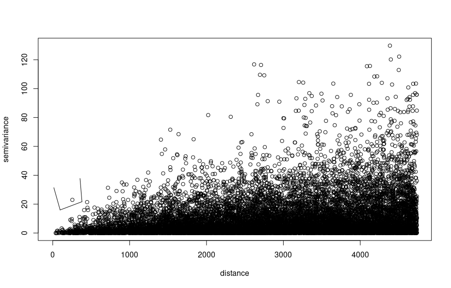
Rycina 6.7: Przykład wyboru par odstających z chmury semiwariogramu zmiennej temp.
Następnie można wyświetlić wybrane pary punktów z użyciem funkcji plot() (rycina 6.8).
plot(vario_cloud_sel, punkty)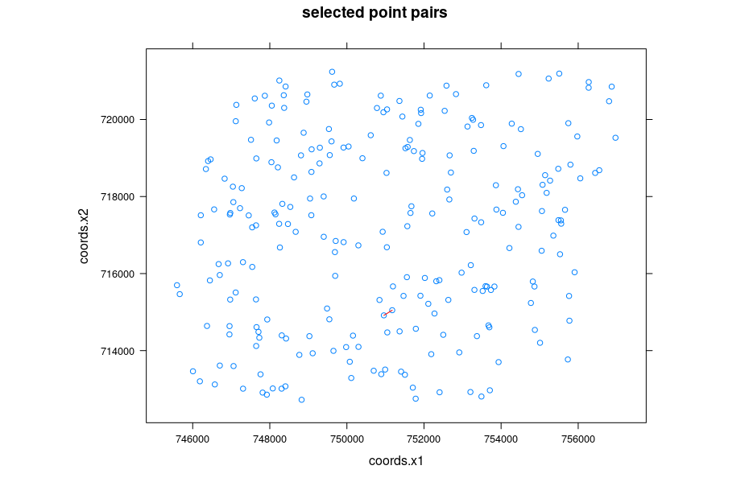
Rycina 6.8: Lokalizacja wybranych par obserwacji (czerwone linie).
6.3.4 Charakterystyka struktury przestrzennej
Semiwariogram jest wykresem pokazującym relację pomiędzy odległością a semiwariancją (rycina 6.9). Inaczej mówiąc, dla kolejnych odstępów (lagów) wartość semiwariancji jest uśredniana i przestawiania w odniesieniu do odległości.
\[\hat{\gamma}(h) = \frac{1}{2N(h)}\sum_{\alpha=1}^{N(h)}(z(u_{\alpha}) - z(u_{\alpha}+h))^2\]
, gdzie \(N(h)\) oznacza liczbę par punktów w odstępie \(h\).
W oparciu o semiwariogram empiryczny (czyli oparty na danych) możemy następnie dopasować do niego model/e.
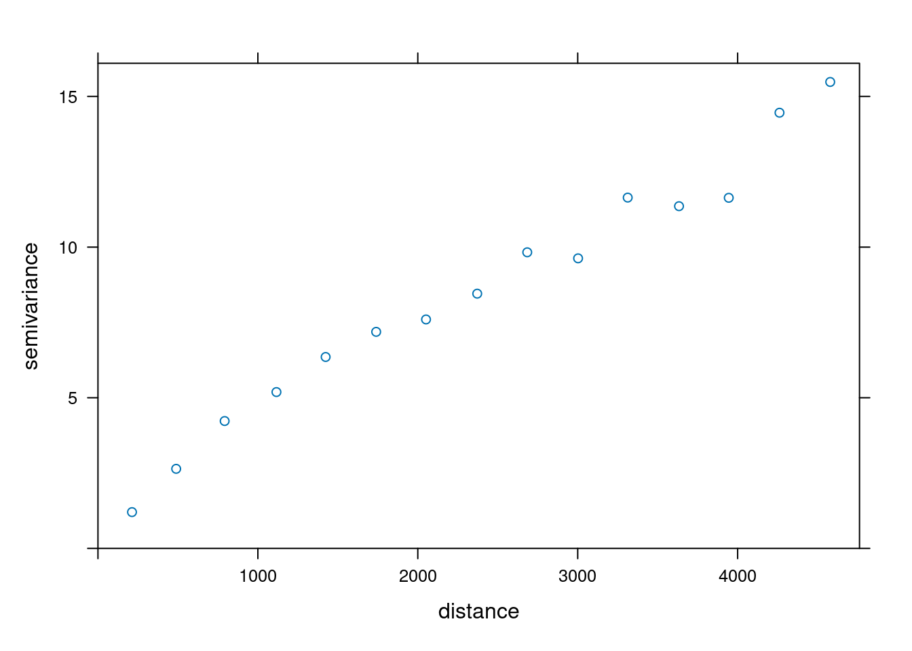
Rycina 6.9: Semiwariogram empiryczny zmiennej temp.
6.3.5 Tworzenie semiwariogramu
Stworzenie podstawowego semiwariogramu w pakiecie gstat odbywa się z użyciem funkcji variogram().
Należy w niej zdefiniować analizowaną zmienną (w tym przykładzie temp ~ 1) oraz zbiór punktowy (punkty).
vario_par = variogram(temp ~ 1, locations = punkty)
vario_par## np dist gamma dir.hor dir.ver id
## 1 111 212.9356 1.203287 0 0 var1
## 2 283 489.0804 2.639854 0 0 var1
## 3 446 792.3222 4.226593 0 0 var1
## 4 631 1116.0957 5.187903 0 0 var1
## 5 815 1423.8256 6.352106 0 0 var1
## 6 892 1739.7600 7.186529 0 0 var1
## 7 943 2051.5149 7.598215 0 0 var1
## 8 1078 2371.6198 8.453746 0 0 var1
## 9 1218 2684.4065 9.826903 0 0 var1
## 10 1155 3002.3276 9.626642 0 0 var1
## 11 1242 3312.6962 11.642621 0 0 var1
## 12 1285 3633.4536 11.357612 0 0 var1
## 13 1302 3944.5241 11.635848 0 0 var1
## 14 1362 4261.7974 14.460067 0 0 var1
## 15 1409 4578.9006 15.480848 0 0 var1Do wyświetlenia semiwariogramu służy funkcja plot().
Można również dodać informację o liczbie par punktów, jaka posłużyła do wyliczenia semiwariancji dla kolejnych odstępów poprzez argument plot.numbers = TRUE (rycina 6.10).
plot(vario_par, plot.numbers = TRUE)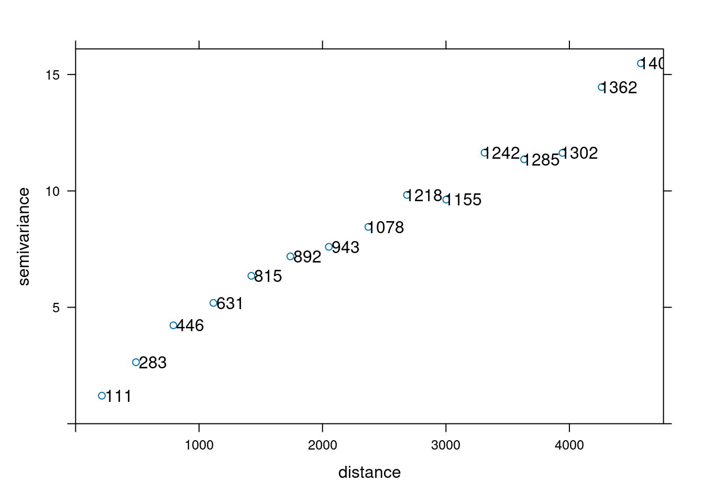
Rycina 6.10: Semiwariogram empiryczny zmiennej temp wraz z zaznaczoną liczbą par dla każdego odstępu.
6.3.6 Parametry semiwariogramu
Przy ustalaniu parametrów semiwariogramu powinno się stosować do kilku utartych zasad (tzw. rules of thumb):
- W każdym odstępie powinno się znaleźć co najmniej 30 par punktów.
- Maksymalny zasięg semiwariogramu (ang. cutoff distance) to 1/2 pierwiastka z badanej powierzchni (inne źródła mówią o połowie z przekątnej badanego obszaru/jednej trzeciej).
- Liczba odstępów powinna nie być mniejsza niż 10.
- Optymalnie maksymalny zasięg semiwariogramu powinien być dłuższy o 10-15% od zasięgu zjawiska.
- Optymalnie odstępy powinny być jak najbliżej siebie i jednocześnie nie być chaotyczne.
- Warto metodą prób i błędów określić optymalne parametry semiwariogramu.
- Należy określić czy zjawisko wykazuje anizotropię przestrzenną.
6.3.7 Obliczenia pomocnicze
W zrozumieniu danych oraz przy określaniu parametrów semiwariogramu może pomóc szereg obliczeń pomocniczych. Przykładowo, aby wyliczyć liczbę par obserwacji można użyć poniższego kodu.
## [1] 29161Powierzchnia zajmowana przez jedną próbkę jest osiągana poprzez podzielenie całej badanej powierzchni poprzez liczbę punktów.
## 261886.9 [m^2]Średnia odległość między punktami to wartość pierwiastka z powierzchni zajmowanej przez jedną próbkę.
sqrt(pow_pr)## 511.7489 [m]Ostatnim obliczeniem pomocniczym jest określenie połowy pierwiastka powierzchni. Może być ono następnie użyte do ustalenia maksymalnego zasięgu semiwariogramu.
## 3980.472 [m]6.3.8 Modyfikacja semiwariogramu
Maksymalny zasięg semiwariogramu (ang. cutoff distance) jest domyślnie wyliczany w pakiecie gstat jako 1/3 z najdłuższej przekątnej badanego obszaru.
Można jednak tę wartość zmodyfikować używając argumentu cutoff (rycina 6.11).
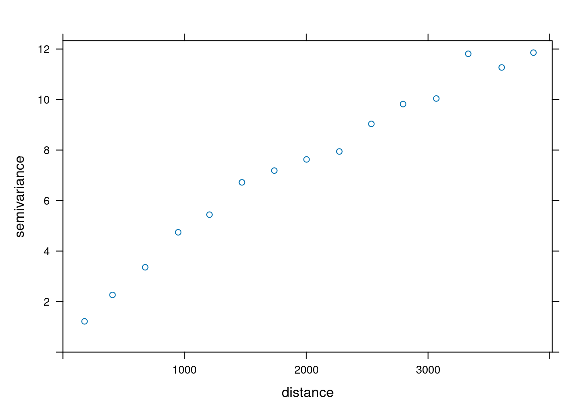
Rycina 6.11: Semiwariogram empiryczny zmiennej temp używając ręcznie ustalonej wartości maksymalnego zasięgu semiwariogramu.
Dodatkowo, domyślnie w pakiecie gstat odległość między przedziałami (ang. interval width) jest wyliczana jako maksymalny zasięg semiwariogramu podzielony przez 15.
Można to oczywiście zmienić używając zarówno argumentu cutoff, jak i argumentu width mówiącego o szerokości odstępów (rycina 6.12).
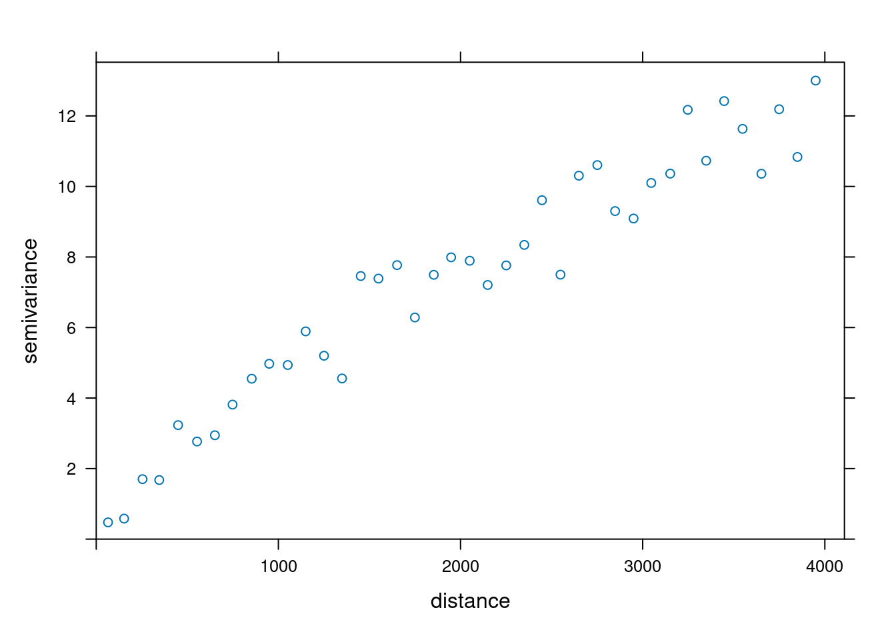
Rycina 6.12: Semiwariogram empiryczny zmiennej temp używając ręcznie ustalonej wartości szerokości odstępów.
6.4 Anizotropia
6.4.1 Anizotropia struktury przestrzennej
W wielu sytuacjach, podobieństwo pomiędzy wartość cechy w punktach zależy nie tylko od odległości, ale także od kierunku. O takim zjawisku mówimy, że wykazuje ono anizotropię struktury przestrzennej.
6.4.2 Mapa semiwariogramu
Mapa semiwariogramu (zwana inaczej powierzchnią semiwariogramu) służy do określenia czy struktura przestrzenna zjawiska posiada anizotropię, a jeżeli tak to w jakim kierunku. Na podstawie mapy semiwariogramu identyfikuje się także parametry potrzebne do zbudowania semiwariogramów kierunkowych.
Stworzenie mapy semiwariogramu odbywa się poprzez dodanie kilku argumentów do funkcji variogram(): oprócz argumentu zmiennej i zbioru punktowego, jest to cutoff, width, oraz map = TRUE.
Następnie można ją wyświetlić używając funkcji plot() (rycina 6.13).
Warto w tym wypadku użyć dodatkowego argumentu threshold, który powoduje, że niepewna wartość semiwariancji (wyliczona na małej liczbie punktów) nie jest wyświetlana.
vario_map = variogram(temp ~ 1, locations = punkty,
cutoff = 4000, width = 400, map = TRUE)
# co najmniej 30 par punktów
plot(vario_map, threshold = 30,
col.regions = hcl.colors(40, palette = "ag_GrnYl", rev = TRUE)) 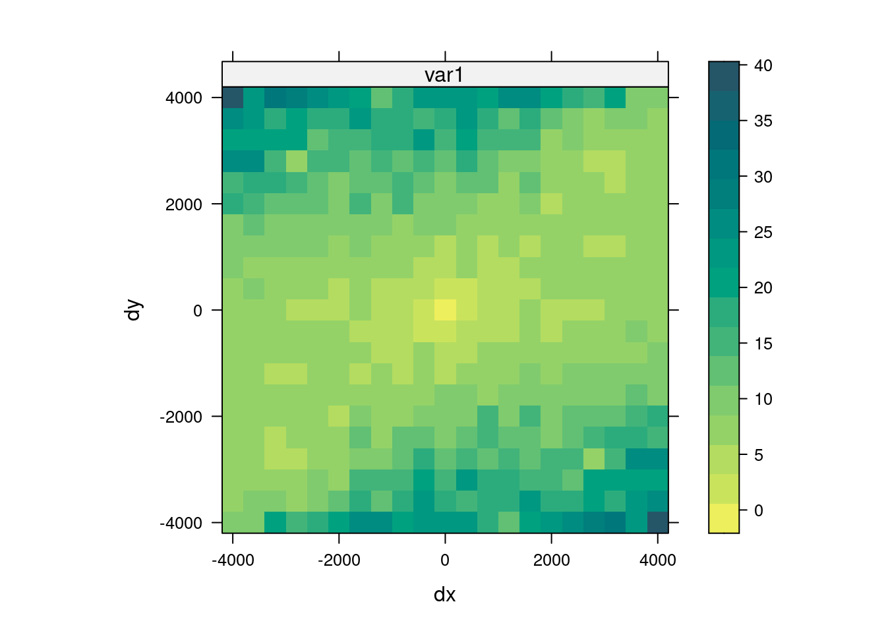
Rycina 6.13: Mapa semiwariogramu zmiennej temp.
6.4.3 Semiwariogramy kierunkowe
W przypadku, gdy zjawisko wykazuje anizotropię przestrzenną, możliwe jest stworzenie semiwariogramów dla różnych wybranych kierunków (rycina 6.14).
Dla argumentu alpha = c(0, 45, 90, 135) wybrane cztery główne kierunki to 0, 45, 90 i 135 stopni.
Oznacza to, że przykładowo dla kierunku 45 stopni brane pod uwagę będą wszystkie pary punktów pomiędzy 22,5 a 67,5 stopnia.
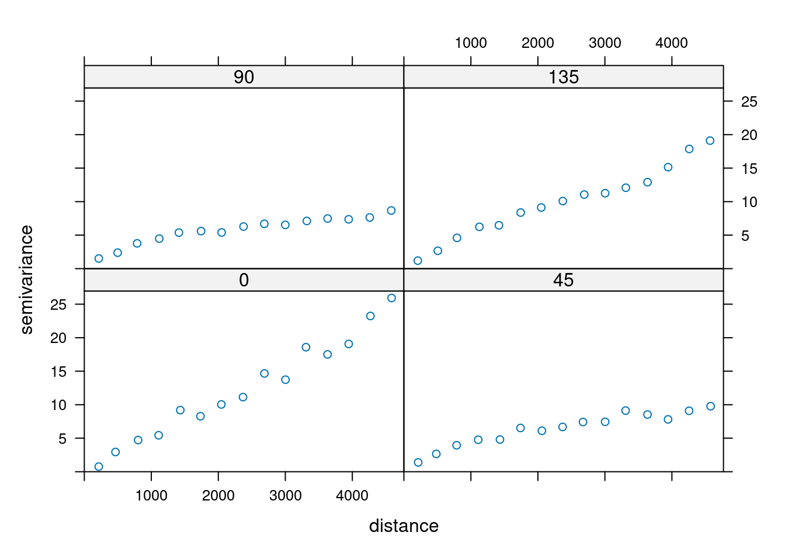
Rycina 6.14: Semiwariogramy kierunkowe dla zmiennej temp.
6.5 Zadania
Przyjrzyj się danym z obiektu punkty_pref.
Możesz go wczytać używając poniższego kodu:
data(punkty_pref)Stwórz wykres rozrzutu z przesunięciem dla zmiennej
srtmdla odstępów od 0 do 5000 metrów co 625 metry. Co można odczytać z otrzymanego wykresu?Wylicz odległość oraz wartość semiwariancji dla zmiennej
srtmpomiędzy pierwszym i drugim, pierwszym i trzecim, oraz drugim i trzecim punktem. Zwizualizuj te trzy punkty. W jaki sposób można zinterpretować otrzymane wyniki wartości semiwariancji?Twórz chmurę semiwariogramu dla zmiennej
temp. W jaki sposób można zaobserwować na niej wartości odstające? Co one oznaczają?Jaka jest liczba par obserwacji, średnia powierzchnia zajmowana przez jedną próbkę (w km2) oraz średnia odległość między punktami (w km)?
Stwórz semiwariogram zmiennej
srtm. Ile par punktów posłużyło do wyliczenia pierwszego odstępu?Zmodyfikuj powyższy semiwariogram, żeby jego maksymalny zasięg wynosił 3,5 kilometra.
Stwórz mapę semiwariogramu dla zmiennej
srtm. Sprawdź różne wartościcutoff(od 3 do 5 km) orazwidth(od 200 do 500 metrów). Zmień domyślną paletę kolorów w wizualizacji mapy semiwariogramu. (Dodatkowe: spróbuj do tego celu użyć pakietu viridisLite).Co przedstawia stworzona mapa semiwariogramu? Czy badane zjawisko wykazuje izotropię czy anizotropię?
Jeżeli mapa semiwariogramu wykazuje anizotropię struktury przestrzennej to w jakim kierunku? Stwórz semiwariogramy dla wybranych kierunków.